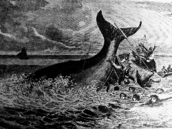

Moby Dick: A Survival Guide to the Twenty First Century
This is my current project. It is barely started, and chances it will ever be finally fully finished are perhaps low. But I'm not sure that any book ever gets fully finished, and I intend to keep going regardless. It's a very gradual labour of love. "Life is like stepping onto a boat which is about to sail out to sea and sink." (Zen Mind, Beginner’s Mind, by Shunryu Suzuki)
